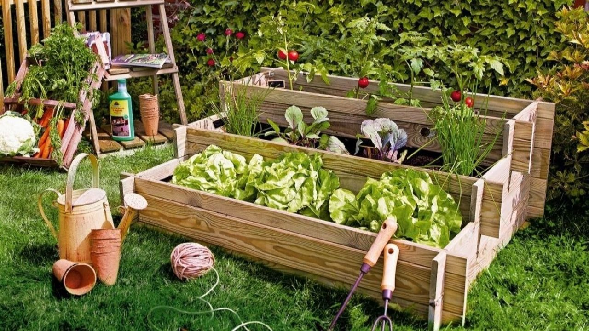
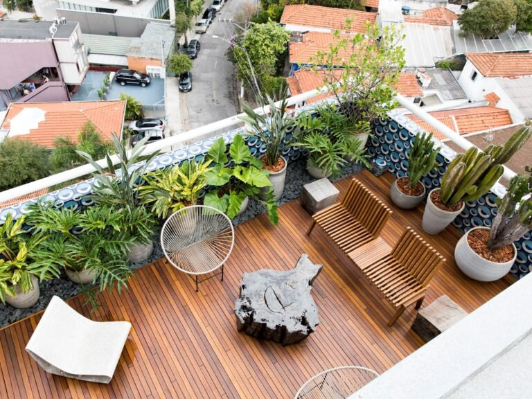
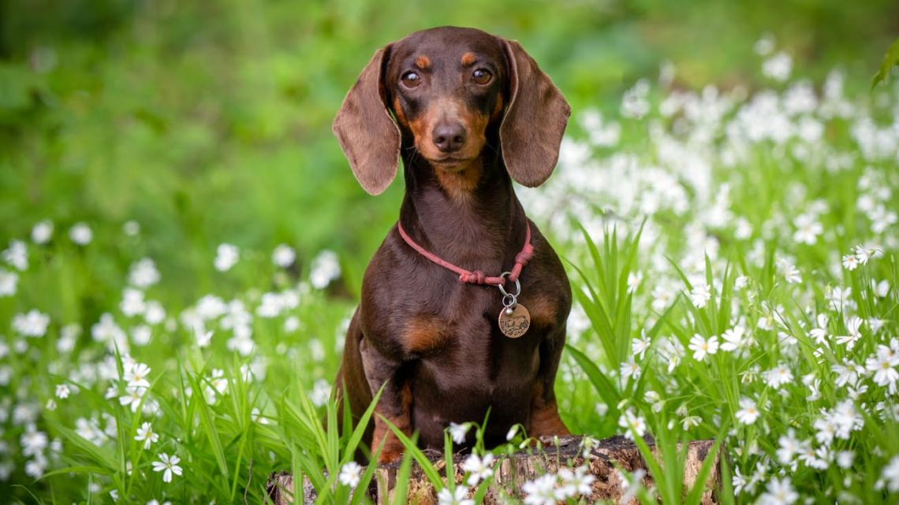
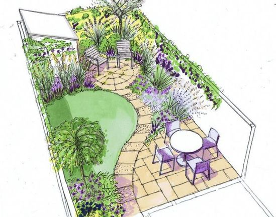
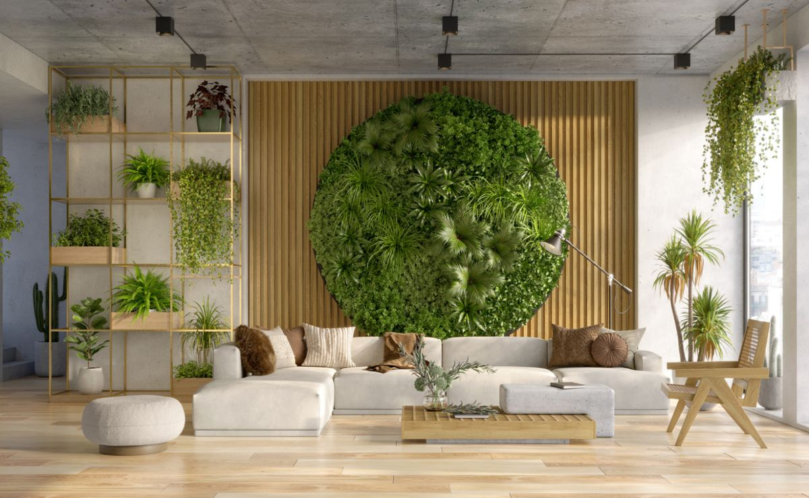
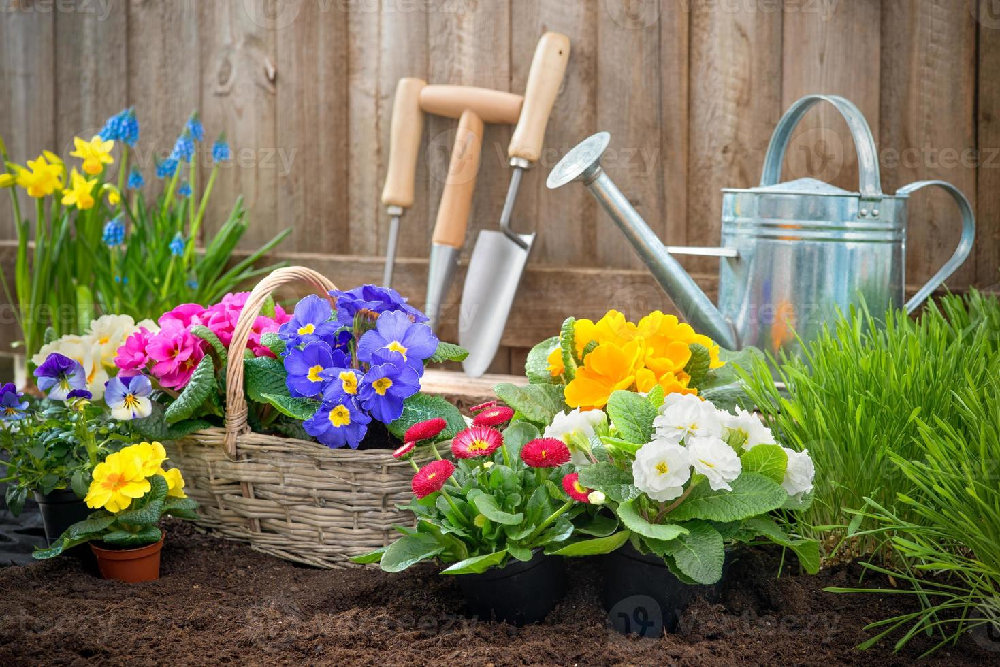

Huertas
En Menant, cultivamos huertas con amor y experiencia. Desde el diseño hasta la cosecha, creamos espacios fructíferos y hermosos. Nos dedicamos a enseñarte el arte de cultivar alimentos frescos y saludables en tu propio hogar, fomentando la conexión con la naturaleza y promoviendo un estilo de vida sustentable.

Terrazas y balcones
Creamos espacios verdes vibrantes incluso en los rincones más pequeños. Extiende la frescura y la vitalidad a tu terraza o balcón con nuestro servicio de paisajismo personalizado. Transformamos estos espacios en verdaderos paraísos naturales, combinando plantas, diseño y cuidado experto. Ofrecemos soluciones creativas para que cada rincón de tu hogar respire vida y naturaleza

Baños para perros
En Menant, entendemos las necesidades de tu mascota. Creamos baños para perros personalizados, diseñados para brindar comodidad y practicidad. Estos espacios fijos ayudan a mantener tu jardín limpio y ordenado, permitiendo que tu perro haga sus necesidades en un área específica. Nos dedicamos a crear soluciones funcionales que mejoran la convivencia entre tu familia y tu fiel compañero.

Diseño de planos
Ofrecemos servicios especializados en la creación de planos de jardines para proyectos que requieren aprobación oficial. Nuestros expertos diseñadores elaboran planos detallados que cumplen con todas las normativas. Ya sea para proyectos residenciales o comerciales, garantizamos presentaciones profesionales que facilitan la aprobación, permitiéndote realizar tu visión paisajística de manera efectiva y sin complicaciones.

Jardines verticales
Exploramos la fusión perfecta entre naturaleza y estructura, creando jardines verticales tanto para interiores como exteriores. Estos muros verdes, meticulosamente diseñados, transforman cualquier espacio en un oasis de verdor y frescura. Ya sea dentro de una oficina o en un espacio al aire libre, nuestros jardines verticales ofrecen una conexión constante con la naturaleza, mejorando la estética y el ambiente.

Mantenimiento
En Menant, no solo creamos jardines y espacios verdes excepcionales, sino que también nos encargamos de su mantenimiento completo. Nuestros expertos jardineros se dedican a cuidar meticulosamente cada planta, asegurando que tu oasis verde permanezca exuberante. Desde el diseño hasta la poda y el riego, nuestro servicio integral garantiza que cada espacio verde que creamos siga floreciendo con vida y vitalidad.